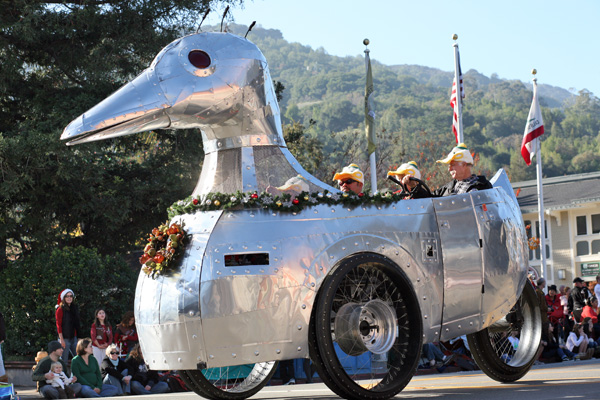

Tuesday, December the 23rd, 2008
back to: title, date or indexes
Next time you and your pals need to lay siege to a fort or a citadel, why not make use of a siege duck?

Glyn Webster kindly alerted me to this contraption, which appears on Rudy Rucker's blog.